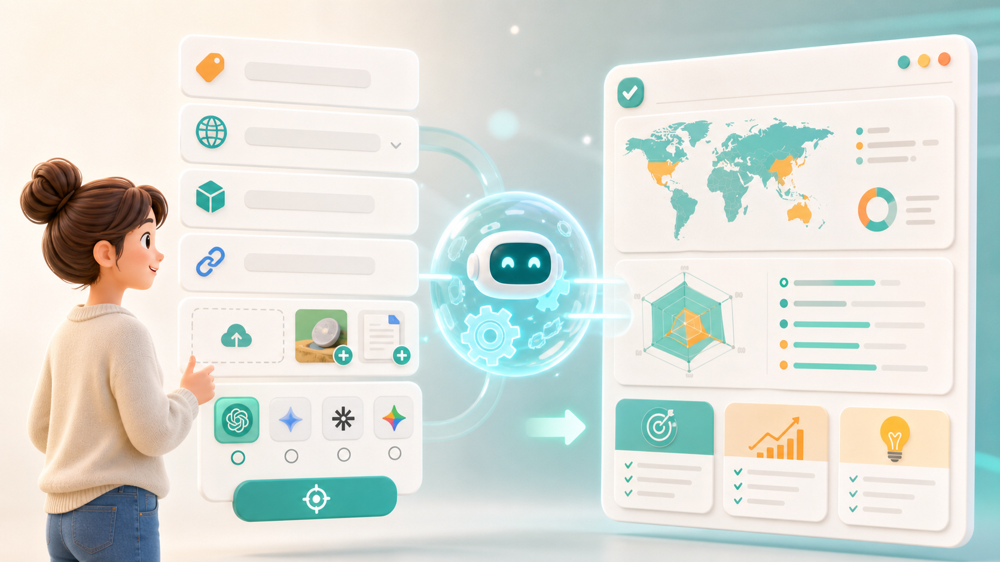

HelloMe 公众号封面
有时候我觉得，很多 AI 工具用起来不像工具。
更像一场临时考试。
你得先知道怎么提问，怎么拆任务，怎么补背景，怎么写限制条件。最好还懂一点模型、工作流、提示词。
可大多数人打开 AI 的时候，并不是想研究这些。
只是想把一件事做完。
想让自己的品牌在 AI 里被看见。 想把产品做成一条能发的视频。 想给客户写一份更像样的方案。 想把一堆资料整理成能直接用的内容。
问题就在这里。
Hermes 很强。
它能执行复杂任务，也能把不同能力串起来。但对普通用户来说，强大不一定等于好用。
因为越强的系统，越容易让人产生一种压力：
我是不是要先问对，才能得到对的结果？
比如做 GEO。
用户真正关心的其实很简单：
•别人在 AI 里问到我的行业时，会不会出现我的品牌？
•竞品为什么比我更容易被推荐？
•我的官网和内容是不是讲得不够清楚？
•接下来我应该先补哪几块内容？
但如果直接把这些交给一个复杂系统，很多人会卡住。
“我要怎么问？” “要不要写关键词？” “是不是还得列平台？” “官网、参考链接、竞品信息要不要一起给？” “我问得不专业，会不会结果也不专业？”
这不是用户笨。
这是产品把太多思考前置给了用户。
HelloMe 不想让用户先学会怎么使用 Hermes。
也不想让用户为了做一件事，先学一堆提示词。
HelloMe 做的是另一件事：
把背后的复杂能力，变成用户看得懂、会选择、能提交的智能体页面。
你不用从零组织一大段需求。
你只需要：
选择方向
填写资料
上传参考
确认目标
等待结果
拿 GEO 智能体来说，用户不需要知道完整的分析链路怎么跑。
页面会直接把关键问题摆出来。
品牌是什么？ 目标城市或市场是哪里？ 产品和服务怎么描述？ 有没有官网？ 想检测哪些 AI 平台？ 有没有补充说明？

填完以后，背后由 Hermes 去执行。
用户最后看的不是“系统运行过程”，而是能不能拿到清楚的结果：
•品牌有没有被 AI 看见
•哪些问题下容易缺席
•竞品更容易出现在哪里
•内容应该先补什么
•下一步怎么优化
现在很多年轻用户对 AI 的期待，其实很直接。
不是“教我成为 AI 专家”。
而是“能不能别让我再多学一个复杂工具”。
做视频的人，不一定想研究镜头语言。
他可能只是想把一款新品讲清楚，发到小红书、抖音、视频号。
做销售的人，不一定想研究话术框架。
他可能只是想更自然地发出第一条私信，不要像群发广告。
做品牌的人，不一定想研究 GEO。
他可能只是想知道，为什么用户问 AI 的时候，答案里没有自己。
所以 HelloMe 里的视频智能体，不应该是一个让人发愣的空白框。
它更像一个已经搭好的创作入口。
用户选择宣传方向：
•新品种草
•测评讲解
•带货转化
•品牌宣传
•产品演示
•客户提案
再上传产品图、人物图、参考视频，补一句最想表达的卖点。
剩下的脚本组织、画面拆解、配音合成、视频生成和结果整理，交给背后的 Hermes。
用户要看的，是最后那条视频能不能发。
真正的低门槛，不是把按钮做大一点。
而是让用户不用先成为专业人士。
HelloMe 可以把很多原本需要拆任务的 AI 场景，变成更轻的智能体入口。
内容优化
选平台、填目标用户、给品牌语气，直接生成标题、结构和正文建议。
销售获客
填客户类型、行业和产品卖点，生成私信、邮件和跟进话术。
产品演示
上传资料，选择演示重点，自动整理讲解顺序和表达方式。
客户提案
输入客户背景和方案方向，生成更适合沟通的提案内容。
FAQ 生成
基于产品资料和常见疑问，整理成用户和 AI 都更容易理解的问答。
这些能力背后当然可以很复杂。
但复杂应该留在后台。
前台应该尽量像一个年轻用户真的会用的页面：
少一点术语。 少一点空白。 少一点“请先描述你的完整需求”。 多一点选项。 多一点参考。 多一点明确的结果预期。
很多 AI 工具都在证明自己懂世界。
懂知识。 懂行业。 懂文案。 懂图片。 懂视频。 懂代码。
但普通用户更在意的是：
它懂不懂我现在想完成什么？
我不是想学习 GEO，我是想知道品牌有没有被 AI 看见。 我不是想学习视频生成，我是想给产品做一条宣传视频。 我不是想研究销售框架，我是想更快联系到潜在客户。 我不是想写一段完美提示词，我是想少走一点弯路。
这就是 HelloMe 的位置。
Hermes 负责背后的能力和执行。
HelloMe 负责把这些能力，翻译成普通用户可以直接使用的智能体页面。
AI 最让人期待的地方，不应该是让每个人都变成提示词高手。
而是让更多普通人可以用上它。
不用先理解系统。 不用先拆清任务。 不用先学一堆名词。 不用在空白输入框前反复组织语言。
打开对应的智能体。
选方向，填资料，上传参考。
然后等一个能直接看的结果。
这就是 HelloMe 想做的事。
把复杂留给 Hermes。
把结果交给用户。
把时间还给生活。
把未来交给 HelloMe。